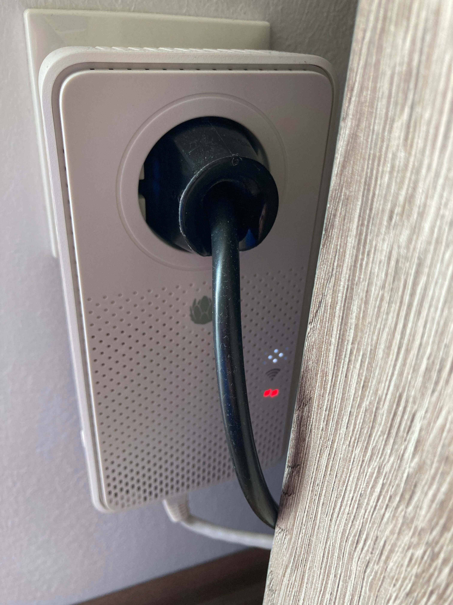
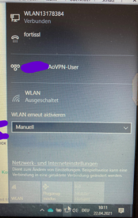
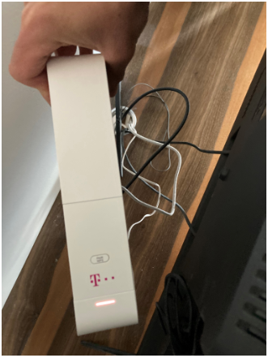
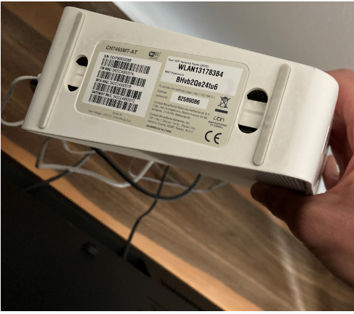
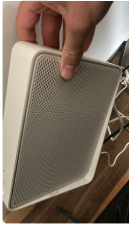
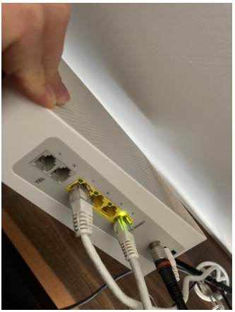

Hallo,
Ich bin seit 2019 bei Magenta. Habe einen Router im Untergeschoss meines Hauses, der einwandfrei funktioniert. Oben habe ich schlechten Empfang. Bedingt durch Covid im Home-Office habe ich mein Büro im Obergeschoss. Da die Verbindung nicht nach oben reichte, habe ich den Powerline Adapter gekauft. Der hat sehr gut funktioniert (per WLAN). Allerdings habe ich das Zimmer gewechselt (selbes Geschoss, ein Raum weiter). Der Powerline Adapter ist natürlich mitgewandert. Hier funktioniert das Internet nicht mehr (weder WLAN und noch per LAN-Verbindung). Mein iPhone war bis vor kurzem auch noch verbunden mit dem WLAN, jedoch funktioniert das darauf gar nicht mehr, weshalb ich es immer getrennt habe.
Dass bei Teams-Meetings mit mehreren Personen mit aktiver Kamera die Internetverbindung nicht die Beste ist, ist klar. Allerdings muss ich teilweise eine knappe Minute warten um ein YT-Video zu öffnen, oder Daten von meinem Firmenlaufwerk abzurufen. Das kanns leider nicht sein.
Als ich bei der Hotline angerufen habe wurde mir gesagt, dass es vermutlich an der Steckdose liegt. Die Steckdosen können es nun wirklich nicht sein, da das Haus in dem ich wohne 2018 erbaut wurde. Man könne mir nicht weiterhelfen, und jetzt (zu dem Zeitpunkt des Telefonats) funktioniert es ja.
Nun zu meiner Frage, wie kann ich die Internetverbindung optimieren? Der Powerline Adapter ist mit dem "Basis-Router" verbunden. Es gibt somit zwei WiFi-Namen. Eine Besonderheit ist, dass ich, falls ich WLAN am Laptop wähle, den Namen des Powerline Adapters habe. Bin ich jedoch per LAN-Kabel mit dem Adapter verbunden zeigt es mir am Laptop den WiFi-Namen vom "Basis-Router" an. Speedtests funktionieren nicht, da keine Verbindung hergestellt werden kann, also gibt es hier leider keine Screenshots.
Im Anhang seht ihr noch den Adapter, die Verbindungsanzeige mittels LAN-Kabel und die Zugsangsdaten, die den eigentlichen WiFi-Namen ausweisen.
Bitte um Hilfe, da mir bei der Hotline nicht geholfen werden konnte.
LG,
Christoph
PS: Ich spiele mit dem Gedanken, dass es mit einem dieser MESH Router funktionieren könnte, doch da es zuvor im Nebenraum prima funktioniert hat, möchte ich erst mal versuchen das mit dem Adapter hinzubekommen.



vor 2 Stunden schrieb bornaustrian_HFC:
Bitte um Hilfe, da mir bei der Hotline nicht geholfen werden konnte.
Hallo
@bornaustrian_HFC
,
Die Steckdosen müssen in einem Stromkreis hängen, um ein Netzwerk bilden zu können. Schlecht verbundene oder Defekte Dosenklemmen, Sicherungen, Überspannungsfilter z.B in Mehrfachsteckdosen oder Fi-Schalter können das Signal beeinflussen sowie die Länge der dazwischenliegenden Leitung dämpft das Signal oder es kommt gar nicht zu Stande. Auch ein Nachbar könnte das Signal stören. aber man könnte es auch wie bereits von dir erwähnt mit einem Mesh System versuchen.
Am besten funktioniert immer noch eine LAN Verbindung direkt vom Router zum Rechner.
Mesh Router würde dir wahrscheinlich mehr helfen aber all das ist nur eine Annäherung an stabiles Internet.
Hast du denn keine Chance ein LAN Kabel zu ziehen?
Dann bist du mit Sicherheit alle Sorgen los.
")
vor 49 Minuten schrieb Christian_E:
Mesh Router würde dir wahrscheinlich mehr helfen aber all das ist nur eine Annäherung an stabiles Internet.
Hast du denn keine Chance ein LAN Kabel zu ziehen?
Dann bist du mit Sicherheit alle Sorgen los.
Leider nein, einziger Anschluss ist im unteren Geschoss. Aufstemmen werden wir dafür nicht. Irgendwann wird dieses Home Office ja auch wieder aufhören.
Das heißt du gehst davon aus, dass ein Mesh Router auch nicht zu mind. stabilen 25 Mbit/s reicht?
Doch, doch - ein Mesh Router wäre sicher eine Alternative.
Was hast du denn direkt neben dem Modem für eine Geschwindigkeit?
Hast du 2,4 und 5 GHz WLAN im Einsatz?
Mesh ist sicher OK aber ein Kabel ist eben ein KIabel, verstehe aber, dass man dafür nicht gleich stemmen möchte.
vor 20 Stunden schrieb Christian_E:
Doch, doch - ein Mesh Router wäre sicher eine Alternative.
Was hast du denn direkt neben dem Modem für eine Geschwindigkeit?
Hast du 2,4 und 5 GHz WLAN im Einsatz?
Mesh ist sicher OK aber ein Kabel ist eben ein KIabel, verstehe aber, dass man dafür nicht gleich stemmen möchte.
Gute Frage. Ich habe mir das Gerät jetzt mal angesehen. Leider sehe ich keinen Hinweis darauf, welche Geschwindigkeit genutzt wird. Beim alten A1-Modem konnte ich zwischen den beiden switchen. Bei dem nun nicht mehr.
Anbei habe ich ein paar Bilder des "Basis-Routers" angehängt. Den Staub im Hintergrund nicht beachten
") Vielleicht könnt ihr da etwas herauslesen
Vielleicht könnt ihr da etwas herauslesen




Sieht tatsächlich nur nach einer 2,4 GHz Variante aus.
Soll jetzt aber kein Problem für dich sein, denn mit 2,4 GHz hast du eine etwas bessere Reichweitengarantie als mit 5 GHz.
Dafür ist 5 GHz deutlich weniger störanfällig. Würde sich mit einem nachgeschaltenen eigenen Router lösen lassen - ist aber in diesem Fall mal kein Thema.
Bei dir wäre Mesh mit 2,4 GHz dann die entsprechende Lösung.
Also die Fiber Box 1 (ehem. Connect Box) kann sowohl 2.4, als auch 5 GHz W-Lan.
Bei diesen Boxen heißen das 2.4 GHz und das 5GHz W-Lan gleich, dies kann aber in den Einstellungen geändert werden.
Hier gibt es eine
Anleitung, wie man den W-Lan Namen und das Passwort ändern kann
.
Ah alles klar.
Das ist aus dem Etikett nicht hervor gegangen.
Würde aber in diesem Fall mal bei 2,4 GHz bleiben, denn da gilt es ja eine Distanz zu überbrücken.
vor 20 Stunden schrieb Christian_E:
Ah alles klar.
Das ist aus dem Etikett nicht hervor gegangen.
Würde aber in diesem Fall mal bei 2,4 GHz bleiben, denn da gilt es ja eine Distanz zu überbrücken.
Könnte das wirklich einen Einfluss haben? Ich beziehe das Internet via LAN-Kabel aus dem Adapter. Soweit ich das richtig verstanden habe, wird das Internet per Stromleitung übertragen. Sind die GHz nicht ein Indikator für die kabellose Übertragung?
Ja klar - du hast recht.
Wenn du PowerLine weiter betreibst ist das so, dann läuft das über das Stromkabel.
Wenn du Mesh betreibst - also WLAN Repeater Funktionalität, dann würde das über WLAN gehen.
Und klar - GHz ist die Frequenz, wie über WLAN das Signal übertragen wird.
Sorry, wenn ich da für Verwirrung gestiftet habe.
Hallo
@bornaustrian_HFC
,
sorry wenn ich mich hier auch noch einmische - aber so wie ich das sehe liegt dein Problem einzig und alleine beim Powerline-Adapter.
Nun gibt es inzwischen ja unzählige verschiedene PowerLine-Adapter und alle haben irgendwo ihre Vor- und Nachteile. Ich hab Powerline-Adapter gesehen, die das Signal ausschließlich über W-Lan (also wie ein WLan-Repeater) weitergegeben haben. Andere Geräte aber verwenden die 230 Volt/50 Hz vom Stromleitungsnetz als Trägerfrequenz und schicken das „Internet-Signal“ über diese Trägerfrequenz zum Empfänger. Dort wird das „Internet-Signal“ wieder auf ein, für die Netzwerkkarte des PCs verständliches Signal moduliert und somit der Computer mit dem Modem verbunden. Diese Übertragung ist natürlich sehr stark von den unterschiedlichsten Störquellen im Bereich der Stromleitung abhängig (z.b. Frequenzfilter, Drehstromzähler, Smartmeter, etc...)
Soweit ich an Hand von Bild 1 erkennen kann sollte bei dir der Computer (oder der Laptop) ganz ohne WLan über die PowerLine-Adapter mit dem Router verbunden sein. Die Stromleitung zwischen Adapter 1 (Sender) und Adapter 2 (Empfänger) sollte eigentlich lediglich wie ein langes Netzwerkkabel funktionieren (nur eben ein klein wenig langsamer
)
Übrigens: Fast alle Powerline-Adapter haben - wie viele anderere Geräte auch - eine IP-Adresse und können meistens auch über eine GUI konfiguriert werden.
Also ich würde bei der Fehlersuche eindeutig erst mal hier ansetzen…. - Magenta ist hier ausnahmsweise mal unschuldig

LG wisi
{kind=link}

{kind=link}
{kind=link}
{kind=link}
{kind=link}
{kind=link}